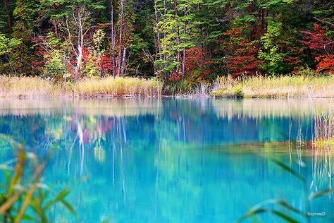

五色沼湖沼群
神秘の湖沼「五色沼」
1888年（明治21年）磐梯山頂北側、小磐梯を含む部分が水蒸気爆発によって山体崩壊を起こし、岩なだれが川をせき止め、このエリアに数百もの湖沼が形成されました。そのうちの数十の湖沼群が「五色沼湖沼群」です。
2016年にミシュラン・グリーンガイド1つ星に認定。
正確には「五色沼湖沼群」と言い、毘沙門沼・赤沼・みどろ沼・竜沼・弁天沼・るり沼・青沼・柳沼などの数多くの湖沼の総称。 沼によって、エメラルドグリーン、コバルトブルー、ターコイズブルー、エメラルドブルー、パステルブルーと色が違う不思議な場所で「神秘の湖沼」と言われる。特に青沼は自然が作り出したものとは思えない綺麗な色。
５つの沼というわけではなく、様々な色彩を見られることから「五色沼（ごしきぬま）」という名前がつきました。色が異なる要因は、天候や季節、見る角度、水中に含まれる火山性物質などによると言われています。四季や天候、時間帯などによっても、少しずつちがった色にみえるので、一度だけでなく再び訪れてみることをおすすめします。
最も大きな「毘沙門沼」では手漕ぎボートを楽しむことができます。
また雪解け後の芽吹き前の森や、落葉後の森の中では、小鳥たちを見つけやすくなるため、野鳥観察が楽しめます。
そして雪解け後の春は、特に美しい湖沼の色を見せます。